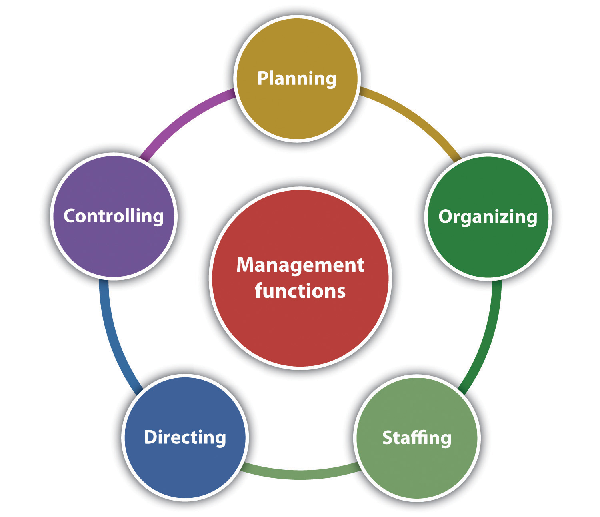
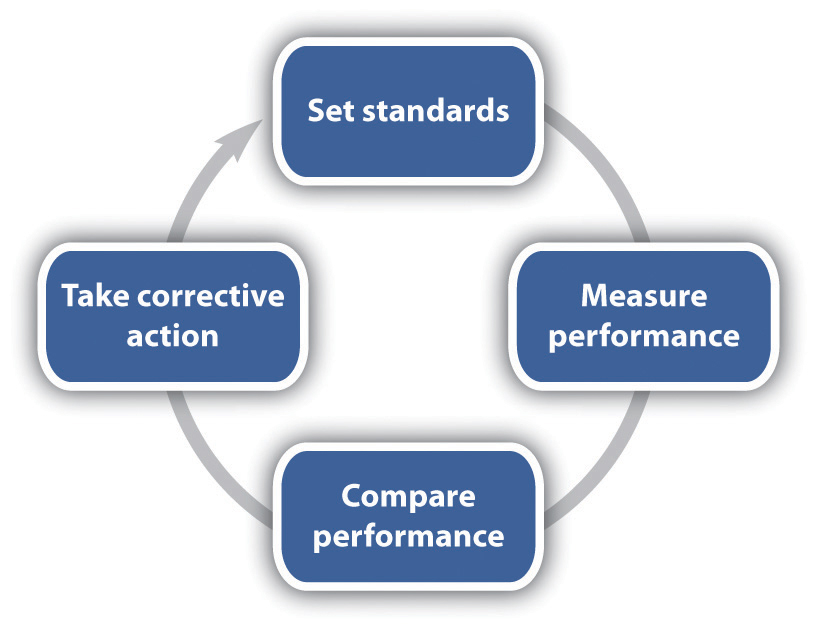
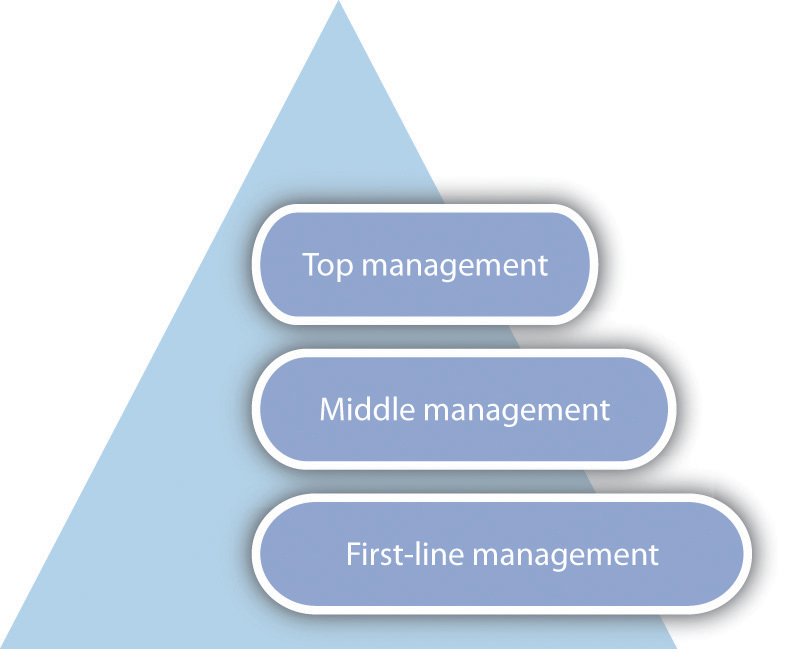
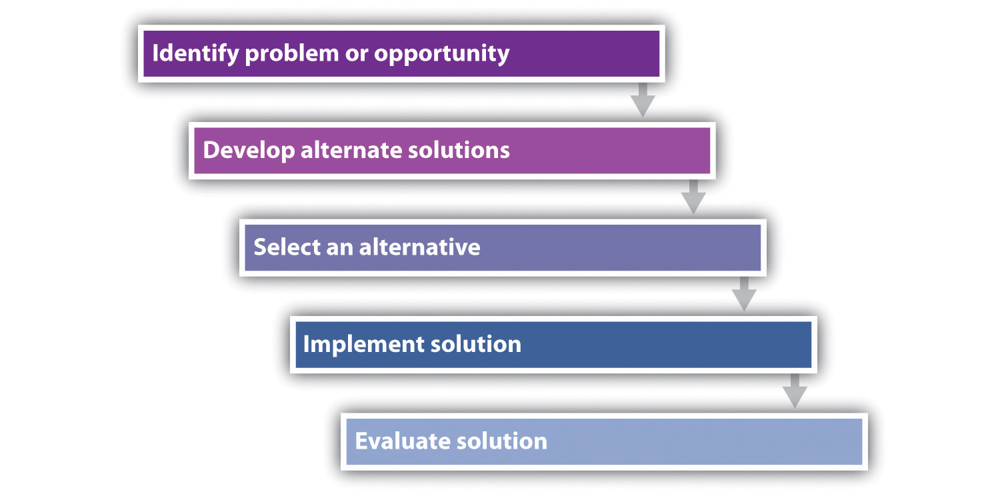

All small businesses need to be concerned about management principles. Management decisions will impact the success of a business, the health of its work environment, its growth if growth is an objective, and customer value and satisfaction. Seat-of-the-pants management may work temporarily, but its folly will inevitably take a toll on a business. This section discusses management principles, levels, and skills—all areas that small business owners should understand so that they can make informed and effective choices for their businesses.
There is no universally accepted definition for management. The definitions run the gamut from very simple to very complex. For our purposes, we define managementThe application of planning, organizing, staffing, directing, and controlling functions in the most efficient manner possible to accomplish meaningful organizational objectives. as “the application of planning, organizing, staffing, directing, and controlling functions in the most efficient manner possible to accomplish meaningful organizational objectives.”John M. Ivancevich and Thomas N. Duening, Business: Principles, Guidelines, and Practices (Mason, OH: Atomic Dog Publishing, 2007), 172. Put more simply, management is all about achieving organizational objectives through people and other resources.David L. Kurtz, Contemporary Business (Hoboken, NJ: John Wiley & Sons, 2011), 254.
Management principles apply to all organizations—large or small, for-profit or not-for-profit. Even one-person small businesses need to be concerned about management principles because without a fundamental understanding of how businesses are managed, there can be no realistic expectation of success. Remember that the most common reason attributed to small business failure is failure on the part of management.
On any given day, small business owners and managers will engage in a mix of many different kinds of activities—for example, deal with crises as they arise, read, think, write, talk to people, arrange for things to be done, have meetings, send e-mails, conduct performance evaluations, and plan. Although the amount of time that is spent on each activity will vary, all the activities can be assigned to one or more of the five management functions: planning, organizing, staffing, directing, and controlling (Figure 12.1 "Management Functions").
Figure 12.1 Management Functions
PlanningThe process of anticipating future events and conditions and determining courses of action for achieving organizational objectives. “is the process of anticipating future events and conditions and determining courses of action for achieving organizational objectives.”David L. Kurtz, Contemporary Business (Hoboken, NJ: John Wiley & Sons, 2011), 257. It is the one step in running a small business that is most commonly skipped, but it is the one thing that can keep a business on track and keep it there.“Management Principles,” Small Business Notes, accessed February 2, 2012, www.smallbusinessnotes.com/managing-your-business/management-principles. Planning helps a business realize its vision, get things done, show when things cannot get done and why they may not have been done right, avoid costly mistakes, and determine the resources that will be needed to get things done.John M. Ivancevich and Thomas N. Duening, Business: Principles, Guidelines, and Practices (Mason, OH: Atomic Dog Publishing, 2007), 176; David L. Kurtz, Contemporary Business (Hoboken, NJ: John Wiley & Sons, 2011), 257. Business planning for the small business is discussed in Chapter 5 "The Business Plan", and marketing planning is discussed in Chapter 8 "The Marketing Plan".
OrganizingGrouping people and assigning activities so that job tasks and the mission can be properly carried out. “consists of grouping people and assigning activities so that job tasks and the mission can be properly carried out.”John M. Ivancevich and Thomas N. Duening, Business: Principles, Guidelines, and Practices (Mason, OH: Atomic Dog Publishing, 2007), 176. Establishing a management hierarchy is the foundation for carrying out the organizing function.
Contrary to what some people may believe, the principle of organizing is not dead. Rather, it is clearly important “to both the organization and its workers because both the effectiveness of organizations and worker satisfaction require that there be clear and decisive direction from leadership; clarity of responsibilities, authorities, and accountabilities; authority that is commensurate with responsibility and accountability; unified command (each employee has one boss); a clear approval process; and, rules governing acceptable employee behavior.”“Traditional Management Principles,” Small Business Notes, accessed February 2, 2012, www.smallbusinessnotes.com/managing-your-business/traditional-management -principles.html. Except for a small business run solely by its owner, every small business needs a management hierarchy—no matter how small. Each person in the business should know who is responsible for what, have the authority to carry out his or her responsibilities, and not get conflicting instructions from different bosses. The absence of these things can have debilitating consequences for the employees in particular and the business in general.“Traditional Management Principles,” Small Business Notes, accessed February 2, 2012, www.smallbusinessnotes.com/managing-your-business/traditional-management -principles.html.
The organizational design and structure of a small business are important parts of organizing, which are discussed in Section 12.2 "Organizational Design".
Glassblowing Business Thrives
Lesson learned: Everyone should know his or her role in the business.
www.cnn.com/video/#/video/living/2010/10/15/mxp.sbs.glass.business.hln?iref=videosearch
The staffingSelecting, placing, training, developing, compensating, and evaluating employees. function involves selecting, placing, training, developing, compensating, and evaluating (the performance appraisal) employees.John M. Ivancevich and Thomas N. Duening, Business: Principles, Guidelines, and Practices (Mason, OH: Atomic Dog Publishing, 2007), 176. Small businesses need to be staffed with competent people who can do the work that is necessary to make the business a success. It would also be extremely helpful if these people could be retained. Many of the issues associated with staffing in a small business are discussed in Section 12.4 "People".
DirectingThe managerial function that initiates action. is the managerial function that initiates action: issuing directives, assignments, and instructions; building an effective group of subordinates who are motivated to do what must be done; explaining procedures; issuing orders; and making sure that mistakes are corrected.John M. Ivancevich and Thomas N. Duening, Business: Principles, Guidelines, and Practices (Mason, OH: Atomic Dog Publishing, 2007), 177; David L. Kurtz, Contemporary Business (Hoboken, NJ: John Wiley & Sons, 2011), 257. Directing is part of the job for every small business owner or manager. LeadingThe process of influencing people to work toward a common goal. and motivatingThe process of providing reasons for people to work in the best interests of an organization. work together in the directing function. Leading “is the process of influencing people to work toward a common goal [and] motivating is the process of providing reasons for people to work in the best interests of an organization.”William M. Pride, Robert J. Hughes, and Jack R. Kapoor, Business (Boston: Houghton Mifflin, 2008), 224.
Different situations call for different leadership styles. In a very influential research study, Kurt Lewin established three major leadership styles: autocratic, democratic, and laissez-faire.Kurt Lewin, Ronald Lippitt, and Ralph K. White, “Patterns of Aggressive Behavior in Experimentally Created ‘Social Climates,’” Journal of Social Psychology 10, no. 2 (1939): 269–99. Although good leaders will use all three styles depending on the situation, with one style normally dominant, bad leaders tend to stick with only one style.Don Clark, “Leadership Styles,” Big Dog and Little Dog’s Performance Juxtaposition, June 13, 2010, accessed February 2, 2012, www.nwlink.com/~donclark/leader/leadstl.html.
Autocratic leadershipThe leader makes decisions without involving others. occurs when a leader makes decisions without involving others; the leader tells the employees what is to be done and how it should be accomplished.Kurt Lewin, “Lewin’s Leadership Styles,” Changing Minds, accessed February 2, 2012, changingminds.org/disciplines/leadership/styles/lewin_style.htm; Don Clark, “Leadership Styles,” Big Dog and Little Dog’s Performance Juxtaposition, June 13, 2010, accessed February 2, 2012, www.nwlink.com/~donclark/leader/leadstl.html. Lewin et al. found that this style creates the most discontent.Kurt Lewin, Ronald Lippitt, and Ralph K. White, “Patterns of Aggressive Behavior in Experimentally Created ‘Social Climates,’” Journal of Social Psychology 10, no. 2 (1939): 269–99. However, this style works when all the information needed for a decision is present, there is little time to make a decision, the decision would not change as a result of the participation of others, the employees are well motivated, and the motivation of the people who will carry out subsequent actions would not be affected by whether they are involved in the decision or not.Kurt Lewin, “Lewin’s Leadership Styles,” Changing Minds, accessed February 2, 2012, changingminds.org/disciplines/leadership/styles/lewin_style.htm; Don Clark, “Leadership Styles,” Big Dog and Little Dog’s Performance Juxtaposition, June 13, 2010, accessed February 2, 2012, www.nwlink.com/~donclark/leader/leadstl.html. This leadership style should not be used very often.
Democratic leadershipThe leader involves other people in decision making. involves other people in the decision making—for example, subordinates, peers, superiors, and other stakeholders—but the leader makes the final decision. Rather than being a sign of weakness, this participative form of leadership is a sign of strength because it demonstrates respect for the opinions of others. The extent of participation will vary depending on the leader’s strengths, preferences, beliefs, and the decision to be made, but it can be as extreme as fully delegating a decision to the team.“Participative Leadership,” Changing Minds, accessed February 2, 2012, changingminds.org/disciplines/leadership/styles/participative_leadership.htm. This leadership style works well when the leader has only part of the information and the employees have the other part. The participation is a win-win situation, where the benefits are mutual. Others usually appreciate this leadership style, but it can be problematic if there is a wide range of opinions and no clear path for making an equitable, final decision.Kurt Lewin, “Lewin’s Leadership Styles,” Changing Minds, accessed February 2, 2012, changingminds.org/disciplines/leadership/styles/lewin_style.htm; Don Clark, “Leadership Styles,” Big Dog and Little Dog’s Performance Juxtaposition, June 13, 2010, accessed February 2, 2012, www.nwlink.com/~donclark/leader/leadstl.html. In experiments that Lewin et al. conducted with others, the democratic leadership style was revealed as the most effective.Kurt Lewin, Ronald Lippitt, and Ralph K. White, “Patterns of Aggressive Behavior in Experimentally Created ‘Social Climates,’” Journal of Social Psychology 10, no. 2 (1939): 269–99.
Laissez-faire leadership (or delegative or free-reign leadership)Leadership that minimizes the leader’s involvement in decision making, but the leader is responsible for the final decision. minimizes the leader’s involvement in decision making. Employees are allowed to make decisions, but the leader still has responsibility for the decisions that are made. The leader’s role is that of a contact person who provides helpful guidance to accomplish objectives.John M. Ivancevich and Thomas N. Duening, Business: Principles, Guidelines, and Practices (Mason, OH: Atomic Dog Publishing, 2007), 178. This style works best when employees are self-motivated and competent in making their own decisions, and there is no need for central coordination; it presumes full trust and confidence in the people below the leader in the hierarchy.Kurt Lewin, “Lewin’s Leadership Styles,” Changing Minds, accessed February 2, 2012, changingminds.org/disciplines/leadership/styles/lewin_style.htm; Don Clark, “Leadership Styles,” Big Dog and Little Dog’s Performance Juxtaposition, June 13, 2010, accessed February 2, 2012, www.nwlink.com/~donclark/leader/leadstl.html. However, this is not the style to use if the leader wants to blame others when things go wrong.Don Clark, “Leadership Styles,” Big Dog and Little Dog’s Performance Juxtaposition, June 13, 2010, accessed February 2, 2012, www.nwlink.com/~donclark/leader/leadstl.html. This style can be problematic because people may tend not to be coherent in their work and not inclined to put in the energy they did when having more visible and active leadership.Kurt Lewin, Ronald Lippitt, and Ralph K. White, “Patterns of Aggressive Behavior in Experimentally Created ‘Social Climates,’” Journal of Social Psychology 10, no. 2 (1939): 269–99; Kurt Lewin, “Lewin’s Leadership Styles,” Changing Minds, accessed February 2, 2012, changingminds.org/disciplines/leadership/styles/lewin_style.htm.
Good leadership is necessary for all small businesses. Employees need someone to look up to, inspire and motivate them to do their best, and perhaps emulate. In the final analysis, leadership is necessary for success. Without leadership, “the ship that is your small business will aimlessly circle and eventually run out of power or run aground.”Susan Ward, “5 Keys to Leadership for Small Business,” About.com, accessed February 2, 2012, sbinfocanada.about.com/od/smallbusinesslearning/a/leadership1.htm.
Here are some examples of common leadership styles that should be avoided.
ControllingThe process of evaluating and regulating ongoing activities to ensure that the goals are achieved. is about keeping an eye on things. It is “the process of evaluating and regulating ongoing activities to ensure that goals are achieved.”William M. Pride, Robert J. Hughes, and Jack R. Kapoor, Business (Boston: Houghton Mifflin, 2008), 224. Controlling provides feedback for future planning activities and aims to modify behavior and performance when deviations from plans are discovered.John M. Ivancevich and Thomas N. Duening, Business: Principles, Guidelines, and Practices (Mason, OH: Atomic Dog Publishing, 2007), 176. There are four commonly identified steps in the controlling process.John M. Ivancevich and Thomas N. Duening, Business: Principles, Guidelines, and Practices (Mason, OH: Atomic Dog Publishing, 2007), 176; William M. Pride, Robert J. Hughes, and Jack R. Kapoor, Business (Boston: Houghton Mifflin, 2008), 224. (See Figure 12.2 "The Controlling Function".) Setting performance standards is the first step. Standards let employees know what to expect in terms of time, quality, quantity, and so forth. The second step is measuring performance, where the actual performance or results are determined. Comparing performance is step three. This is when the actual performance is compared to the standard. The fourth and last step, taking corrective action, involves making whatever actions are necessary to get things back on track. The controlling functions should be circular in motion, so all the steps will be repeated periodically until the goal is achieved.
Figure 12.2 The Controlling Function
As a small business grows, it should be concerned about the levels or the layers of management. Also referred to as the management hierarchyThe three levels of management: top or executive, middle, and first-line or supervisory. (Figure 12.3 "The Management Hierarchy"), there are typically three levels of management: top or executive, middle, and first-line or supervisory. To meet a company’s goals, there should be coordination of all three levels.
Figure 12.3 The Management Hierarchy
Top managementDevotes most of its time to developing the mission, long-range plans, and strategy of a business., also referred to as the executive level, guides and controls the overall fortunes of a business.William M. Pride, Robert J. Hughes, and Jack R. Kapoor, Business (Boston: Houghton Mifflin, 2008), 226. This level includes such positions as the president or CEO, the chief financial officer, the chief marketing officer, and executive vice presidents. Top managers devote most of their time to developing the mission, long-range plans, and strategy of a business—thus setting its direction. They are often asked to represent the business in events at educational institutions, community activities, dealings with the government, and seminars and sometimes as a spokesperson for the business in advertisements. It has been estimated that top managers spend 55 percent of their time planning.John M. Ivancevich and Thomas N. Duening, Business: Principles, Guidelines, and Practices (Mason, OH: Atomic Dog Publishing, 2007), 183.
Middle managementA conduit between top management and first-line management. is probably the largest group of managers. This level includes such positions as regional manager, plant manager, division head, branch manager, marketing manager, and project director. Middle managers, a conduit between top management and first-line management, focus on specific operations, products, or customer groups within a business. They have responsibility for developing detailed plans and procedures to implement a firm’s strategic plans.David L. Kurtz, Contemporary Business, 13th Edition Update (Hoboken, NJ: John Wiley & Sons, 2011), 255.
First-line or supervisory managementThe group that works directly with the people who produce and sell the goods and/or the services of a business and implements the plans of middle management. is the group that works directly with the people who produce and sell the goods and/or the services of a business; they implement the plans of middle management.David L. Kurtz, Contemporary Business, 13th Edition Update (Hoboken, NJ: John Wiley & Sons, 2011), 255. They coordinate and supervise the activities of operating employees, spending most of their time working with and motivating their employees, answering questions, and solving day-to-day problems.William M. Pride, Robert J. Hughes, and Jack R. Kapoor, Business (Boston: Houghton Mifflin, 2008), 227. Examples of first-line positions include supervisor, section chief, office manager, foreman, and team leader.David L. Kurtz, Contemporary Business, 13th Edition Update (Hoboken, NJ: John Wiley & Sons, 2011), 255; William M. Pride, Robert J. Hughes, and Jack R. Kapoor, Business (Boston: Houghton Mifflin, 2008), 227.
In many small businesses, people often wear multiple hats. This happens with management as well. One person may wear hats at each management level, and this can be confusing for both the person wearing the different hats and other employees. It is common for the small business owner to do mostly first-level management work, with middle or top management performed only in response to a problem or a crisis, and top-level strategic work rarely performed.John Seiffer, “3 Levels of Management,” Better CEO, April 14, 2006, accessed June 1, 2012, betterceo.com/2006/04/14/3-levels-of-management/. This is not a good situation. If the small business is large enough to have three levels of management, it is important that there be clear distinctions among them—and among the people who are in those positions. The small business owner should be top management only. This will eliminate confusion about responsibilities and accountabilities.
Management skillThe ability to carry out the process of reaching organizational goals by working with and through people and other organizational resources. “is the ability to carry out the process of reaching organizational goals by working with and through people and other organizational resources.”Samuel C. Certo and S. Trevis Certo, Modern Management: Concepts and Skills (Upper Saddle River, NJ: Prentice Hall, 2012), 11. Possessing management skill is generally considered a requirement for success.Les Worral and Cary Cooper, “Management Skills Development: A Perspective on Current Issues and Setting the Future Agenda,” Leadership & Organization Development Journal 22, no. 1 (2001): 34–39, as cited in Samuel C. Certo and S. Trevis Certo, Modern Management: Concepts and Skills (Upper Saddle River, NJ: Prentice Hall, 2012), 11. An effective manager is the manager who is able to master four basic types of skills: technical, conceptual, interpersonal, and decision making.
Technical skillsAbilities related to working with processes or physical objects. “are the manager’s ability to understand and use the techniques, knowledge, and tools and equipment of a specific discipline or department.”David L. Kurtz, Contemporary Business, 13th Edition Update (Hoboken, NJ: John Wiley & Sons, 2011), 256. These skills are mostly related to working with processes or physical objects. Engineering, accounting, and computer programming are examples of technical skills.Samuel C. Certo and S. Trevis Certo, Modern Management: Concepts and Skills (Upper Saddle River, NJ: Prentice Hall, 2012), 11. Technical skills are particularly important for first-line managers and are much less important at the top management level. The need for technical skills by the small business owner will depend on the nature and the size of the business.
Conceptual skillsA manager’s ability to see an organization as a unified whole and understand how each part of the overall organization interacts with other parts. “determine a manager’s ability to see the organization as a unified whole and to understand how each part of the overall organization interacts with other parts.”David L. Kurtz, Contemporary Business, 13th Edition Update (Hoboken, NJ: John Wiley & Sons, 2011), 257. These skills are of greatest importance to top management because it is this level that must develop long-range plans for the future direction of a business. Conceptual skills are not of much relevance to the first-line manager but are of great importance to the middle manager. All small business owners need such skills.
Interpersonal skillsThe ability to communicate with, motivate, and lead employees to complete assigned activities. “include the ability to communicate with, motivate, and lead employees to complete assigned activities,”David L. Kurtz, Contemporary Business, 13th Edition Update (Hoboken, NJ: John Wiley & Sons, 2011), 256. hopefully building cooperation within the manager’s team. Managers without these skills will have a tough time succeeding. Interpersonal skills are of greatest importance to middle managers and are somewhat less important for first-line managers. They are of least importance to top management, but they are still very important. They are critical for all small business owners.
The fourth basic management skill is decision makingThe ability to identify a problem or an opportunity, creatively develop alternative solutions, select an alternative, delegate authority to implement a solution, and implement and evaluate the solution. (Figure 12.4 "Management Decision Making"), the ability to identify a problem or an opportunity, creatively develop alternative solutions, select an alternative, delegate authority to implement a solution, and evaluate the solution.John M. Ivancevich and Thomas N. Duening, Business: Principles, Guidelines, and Practices (Mason, OH: Atomic Dog Publishing, 2007), 188.
Figure 12.4 Management Decision Making
Making good decisions is never easy, but doing so is clearly related to small business success. “Decisions that are based on a foundation of knowledge and sound reasoning can lead the company into long-term prosperity; conversely, decisions that are made on the basis of flawed logic, emotionalism, or incomplete information can quickly put a small business out of commission.”“Decision Making,” eNotes, March 17, 2011, accessed June 1, 2012, http://www.enotes.com/decision-making-reference/decision-making-178403.
Small business decisions should be ethical decisions. Making ethical decisions requires that the decision maker(s) be sensitive to ethical issues. In addition, it is helpful to have a method for making ethical decisions that, when practiced regularly, becomes so familiar that it is automatic. The Markkula Center for Applied Ethics recommends the following framework for exploring ethical dilemmas and identifying ethical courses of action.“A Framework for Thinking Ethically,” Santa Clara University, accessed June 1, 2012, www.scu.edu/ethics/practicing/decision/framework.html. However, in many if not most instances, a small business owner or manager and an employee will usually know instinctively whether a particular decision is unethical.
Recognize an Ethical Issue
Get the Facts
Evaluate Alternative Actions
Make a Decision and Test It
Act and Reflect on the Outcome